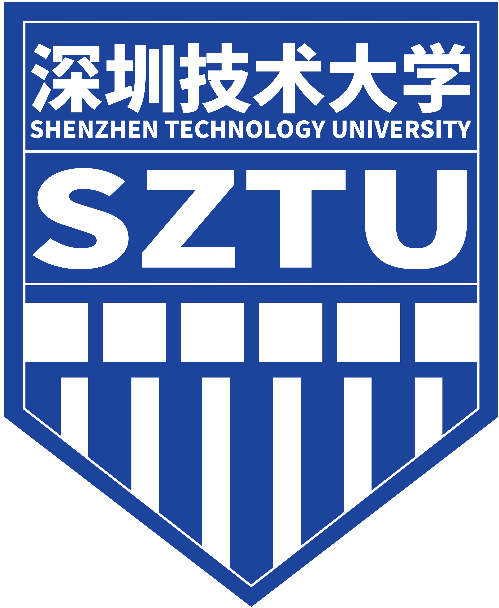

About Me个人简介
I am an undergraduate in Electronic Science and Technology at Shenzhen Technology University, building a foundation in electronics and circuits. Concurrently, as an X Scholar in a joint program with Tsinghua University and Shenzhen X-Institute, I am engaged in advanced research focusing on underactuated robotic grippers and novel mechanical linkages. My goal is to integrate my knowledge in electronics with hands-on robotics research to contribute to the field. 我目前是深圳技术大学电子科学与技术专业的本科生，致力于夯实电子电路与技术的基础。同时，作为清华大学钱学森班-深圳零一学院的零一学者，我正深入参与欠驱动机器人抓手及新型机械连杆等方向的前沿研究。我的目标是将电子领域的知识与机器人学的科研实践相结合，为未来在该领域的贡献做准备。
Education教育背景
Undergraduate:本科:

Shenzhen Technology University深圳技术大学
, Future Technology School -- Bachelor of Engineering in Electronic Science and Technology
, 未来技术学院 -- 电子科学与技术 工学学士
2022.09–2026.07
- Main Courses: C++, Python, Digital Circuits, Sensors and Actuators, Engineering Project Design主修课程: C++, Python, 数字电路, 传感器与执行器, 工程项目设计
- Main Research: Laser-Induced Breakdown Spectroscopy (LIBS)主要研究: 激光诱导击穿光谱 (LIBS)
Joint Training:联合培养:


2023.09–Present
- Main Research: Underactuated Robotic Grippers, Peaucellier Linkages, See Qian Class Step-by-Step Training Program 主要研究: 欠驱动机器人抓手, 佩索利耶连杆, 见钱班进阶式培养计划
Publications学术出版
20252025年
Conference Papers会议论文
-
[C7]GLINT: An Idle-Stroke Grasp-and-Lift Hand for In-Hand ManipulationProceedings of the 13th International Conference on Control, Mechatronics and Automation (ICCMA 2025), Paris, France, November 24–26, 2025[PDF]
-
[C6]BioCrest - A Flexible Adaptive Robotic Hand Based on Idle-Stroke MechanismProceedings of the 2025 IEEE International Conference on Robotics and Biomimetics (ROBIO)[PDF] Accepted
-
[C5]An Underactuated Gripper with Grasshopper-Inspired Linkages and Delay Triggering for Pinching and Adaptive GraspingProceedings of the 2025 International Conference on Information and Automation (ICIA)[PDF] Accepted
-
[C4]A Novel Gripper with Semi-Peaucellier Linkage and Idle-Stroke Mechanism for Linear Pinching and Self-Adaptive GraspingProceedings of the 2025 IEEE/RSJ International Conference on Intelligent Robots and Systems (IROS)[PDF] Accepted
-
[C3]Semi-Peaucellier Linkage and Differential Mechanism for Linear Pinching and Self-Adaptive Grasping2025 IEEE 21st International Conference on Automation Science and Engineering (CASE), Los Angeles, CA, USA, 2025, pp. 3441-3446[PDF] [DOI]
-
[C2]Peaucellier Gripper: A Novel Underactuated Gripper for Linear Pinching and Self-Adaptive Grasp with the Peaucellier LinkageProceedings of the 2025 IEEE International Conference on Advanced Robotics and Mechatronics (ARM)[PDF] Published
-
[C1]Rapid Analysis of Heavy Metal Element Adsorption by SCG Based on LIBS TechnologyE3S Web Conf., 615 (2025) 02010[PDF] [DOI]
Journal Articles期刊论文
-
[J1]Recent Progress on the Research of 3D Printing in Aqueous Zinc-Ion BatteriesPolymers 17, no. 15: 2136
Academic Service学术任职
-
Conference Reviewer会议审稿人IEEE/RSJ International Conference on Intelligent Robots and Systems (IROS) IEEE/RSJ 国际智能机器人与系统会议 (IROS)
-
IEEE International Conference on Automation Science and Engineering (CASE) IEEE 自动化科学与工程国际会议 (CASE)
Honors & Awards荣誉奖项
Provincial-Level & Above省级及以上
University-Level校级
President's Award (Highest Student Honor), Shenzhen Technology University深圳技术大学“校长奖” (学生最高荣誉)2024
Research and Innovation Award (First Prize)深圳技术大学“科研创新奖” (一等奖)2024
Research and Innovation Award (First Prize)深圳技术大学“科研创新奖” (一等奖)2023
CHENHSONG Scholarship (Dean's Award & Academic Excellence)震雄奖学金 (院长奖学金, 学业卓越奖)2023
Outstanding Student Cadre Award深圳技术大学“优秀学生干部”2024